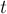
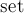

MAXimal
добавлено: 11 Jun 2008 10:34
редактировано: 28 Feb 2012 11:27
Содержание [скрыть]
Нахождение вписанной окружности в выпуклом многоугольнике методом "сжатия сторон" ("shrinking sides") за 
Дан выпуклый многоугольник с  вершинами. Требуется найти вписанную в него окружность максимального радиуса: т.е. найти её радиус и координаты центра. (Если при данном радиусе возможны несколько вариантов центров, то достаточно найти любой из них.)
вершинами. Требуется найти вписанную в него окружность максимального радиуса: т.е. найти её радиус и координаты центра. (Если при данном радиусе возможны несколько вариантов центров, то достаточно найти любой из них.)
В отличие от описанного здесь метода двойного тернарного поиска, асимптотика данного алгоритма —  — не зависит от ограничений на координаты и от требуемой точности, и поэтому этот алгоритм подходит при значительно больших и больших ограничениях на величину координат.
— не зависит от ограничений на координаты и от требуемой точности, и поэтому этот алгоритм подходит при значительно больших и больших ограничениях на величину координат.
Спасибо Ивану Красильникову (mf) за описание этого красивого алгоритма.
Алгоритм
Итак, дан выпуклый многоугольник. Начнём одновременно и с одинаковой скоростью сдвигать все его стороны параллельно самим себе внутрь многоугольника:
Пусть, для удобства, это движение происходит со скоростью 1 координатная единица в секунду (т.е. время в каком-то смысле равно расстоянию: спустя единицу времени каждая точка преодолеет расстояние, равное единице).
В процессе этого движения стороны многоугольника будут постепенно исчезать (обращаться в точки). Рано или поздно весь многоугольник сожмётся в точку или отрезок, и этот момент времени  будет являться ответом на задачу — искомым радиусом (а центр искомой окружности будет лежать на этом отрезке). В самом деле, если мы сжали многоугольник на толщину по всем направлениям, и он обратился в точку/отрезок, то это означает, что существует точка, отстоящая от всех сторон многоугольника на расстоянии , а для бОльших расстояний — такой точки уже не существует.
Итак, нам надо научиться эффективно моделировать этот процесс сжатия. Для этого научимся для каждой стороны определять время, через которое она сожмётся в точку.
Для этого рассмотрим внимательно процесс движения сторон. Заметим, что вершины многоугольника всегда движутся по биссектрисам углов (это следует из равенства соответствующих треугольников). Но тогда вопрос о времени, через которое сторона сожмётся, сводится к вопросу об определении высоты  треугольника, в котором известна длина стороны
треугольника, в котором известна длина стороны  и два прилежащих к ней угла
и два прилежащих к ней угла  и . Воспользовавшись, например, теоремой синусов, получаем формулу:
и . Воспользовавшись, например, теоремой синусов, получаем формулу:
Теперь мы умеем за  определять время, через которое сторона сожмётся в точку.
определять время, через которое сторона сожмётся в точку.
Занесём эти времена для каждой стороны в некую структуру данных для извлечения минимума, например, красно-чёрное дерево ( в языке C++).
Теперь если мы извлечём сторону с наименьшим временем , то эта сторона первой сожмётся в точку — в момент времени . Если многоугольник ещё не сжался в точку/отрезок, то эту сторону надо удалить из многоугольника, и продолжить алгоритм для оставшихся сторон. При удалении стороны мы должны соединить друг с другом её левого и правого соседа, продлив их до точки их пересечения. При этом необходимо будет найти эту точку пересечения, пересчитать длины двух сторон и их времена исчезновения.
При реализации для каждой стороны придётся хранить номер её правого и левого соседа (тем самым как бы построив двусвязный список из сторон многоугольника). Это позволяет реализовать удаление стороны и связывание двух её соседей за .
Если при удалении стороны оказывается, что её стороны-соседи параллельны, то это означает, что многоугольник после этого сжатия вырождается в точку/отрезок, поэтому мы можем сразу останавливать алгоритм и возвращать в качестве ответа время исчезнования текущей стороны (так что проблем с параллельными сторонами не возникает).
Если же такая ситуация с параллельными сторонами не возникает, то алгоритм доработает до момента, в который в многоугольнике останется только две стороны — и тогда ответом на задачу будет являться время удаления предыдущей стороны.
Очевидно, асимптотика этого алгоритма составляет , поскольку алгоритм состоит из шагов, на каждом из которых удаляется по одной стороне (для чего производится несколько операций с за время ).
Реализация
Приведём реализацию описанного выше алгоритма. Данная реализация возвращает только радиус искомой окружности; впрочем, добавление вывода центра окружности не составит большого труда.
Данный алгоритм элегантен тем, что из вычислительной геометрии требуется только нахождение угла между двумя сторонами, пересечение двух прямых и проверка двух прямых на параллельность.
Примечание. Предполагается, что подаваемый на вход многоугольник — строго выпуклый, т.е. никакие три точки не лежат на одной прямой.
const double EPS = 1E-9; const double PI = ...; struct pt { double x, y; pt() { } pt (double x, double y) : x(x), y(y) { } pt operator- (const pt & p) const { return pt (x-p.x, y-p.y); } }; double dist (const pt & a, const pt & b) { return sqrt ((a.x-b.x)*(a.x-b.x) + (a.y-b.y)*(a.y-b.y)); } double get_ang (const pt & a, const pt & b) { double ang = abs (atan2 (a.y, a.x) - atan2 (b.y, b.x)); return min (ang, 2*PI-ang); } struct line { double a, b, c; line (const pt & p, const pt & q) { a = p.y - q.y; b = q.x - p.x; c = - a * p.x - b * p.y; double z = sqrt (a*a + b*b); a/=z, b/=z, c/=z; } }; double det (double a, double b, double c, double d) { return a * d - b * c; } pt intersect (const line & n, const line & m) { double zn = det (n.a, n.b, m.a, m.b); return pt ( - det (n.c, n.b, m.c, m.b) / zn, - det (n.a, n.c, m.a, m.c) / zn ); } bool parallel (const line & n, const line & m) { return abs (det (n.a, n.b, m.a, m.b)) < EPS; } double get_h (const pt & p1, const pt & p2, const pt & l1, const pt & l2, const pt & r1, const pt & r2) { pt q1 = intersect (line (p1, p2), line (l1, l2)); pt q2 = intersect (line (p1, p2), line (r1, r2)); double l = dist (q1, q2); double alpha = get_ang (l2 - l1, p2 - p1) / 2; double beta = get_ang (r2 - r1, p1 - p2) / 2; return l * sin(alpha) * sin(beta) / sin(alpha+beta); } struct cmp { bool operator() (const pair<double,int> & a, const pair<double,int> & b) const { if (abs (a.first - b.first) > EPS) return a.first < b.first; return a.second < b.second; } }; int main() { int n; vector<pt> p; ... чтение n и p ... vector<int> next (n), prev (n); for (int i=0; i<n; ++i) { next[i] = (i + 1) % n; prev[i] = (i - 1 + n) % n; } set < pair<double,int>, cmp > q; vector<double> h (n); for (int i=0; i<n; ++i) { h[i] = get_h ( p[i], p[next[i]], p[i], p[prev[i]], p[next[i]], p[next[next[i]]] ); q.insert (make_pair (h[i], i)); } double last_time; while (q.size() > 2) { last_time = q.begin()->first; int i = q.begin()->second; q.erase (q.begin()); next[prev[i]] = next[i]; prev[next[i]] = prev[i]; int nxt = next[i], nxt1 = (nxt+1)%n, prv = prev[i], prv1 = (prv+1)%n; if (parallel (line (p[nxt], p[nxt1]), line (p[prv], p[prv1]))) break; q.erase (make_pair (h[nxt], nxt)); q.erase (make_pair (h[prv], prv)); h[nxt] = get_h ( p[nxt], p[nxt1], p[prv1], p[prv], p[next[nxt]], p[(next[nxt]+1)%n] ); h[prv] = get_h ( p[prv], p[prv1], p[(prev[prv]+1)%n], p[prev[prv]], p[nxt], p[nxt1] ); q.insert (make_pair (h[nxt], nxt)); q.insert (make_pair (h[prv], prv)); } cout << last_time << endl; }
Основная функция здесь — это  , которая по стороне и её левому и правому соседям вычисляет время исчезновения этой стороны. Для этого ищется точка пересечения этой стороны с соседями, и затем по приведённой выше формуле производится рассчёт искомого времени.
, которая по стороне и её левому и правому соседям вычисляет время исчезновения этой стороны. Для этого ищется точка пересечения этой стороны с соседями, и затем по приведённой выше формуле производится рассчёт искомого времени.